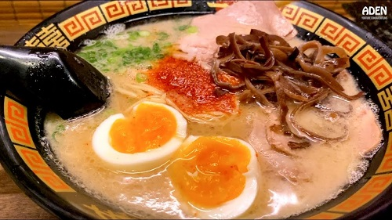
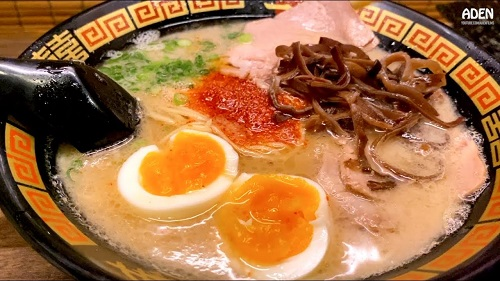

Hello Everyone!We are a group of well-traveled and talented writers who came together to write about the places we've been, the hotels we've visited, the tours we've experienced, and restaurants that we dined at. After submitting a couple blog articles and social posts, we realized that they stumbled upon something great. Explore through our web as you plan your dream trip!
 

Japan is known for having some of the most authentic and unique food on the planet, include Sushi, Ramen and many different dishes. If sushi is your go-to food, the most popular one to go for is Chutoro. Chutoro or chu-toro is medium fatty tuna – found next to the akami moving down towards the belly tip of the fish. Chutoro is closely followed by the next most popular, being Salmon. In terms of Ramen, the top four in Japan are as follows: Shio (Salt based Ramen) Shoyu (Soy-based Ramen) Miso (Soybean-based Ramen) Tonkotsu (Pork bone broth Ramen). All of of these are incredible tasty and will satisfy your ramen cravings, as well as give new comers a great insight into the food-culture of Japan
New York
We love the Big Apple!